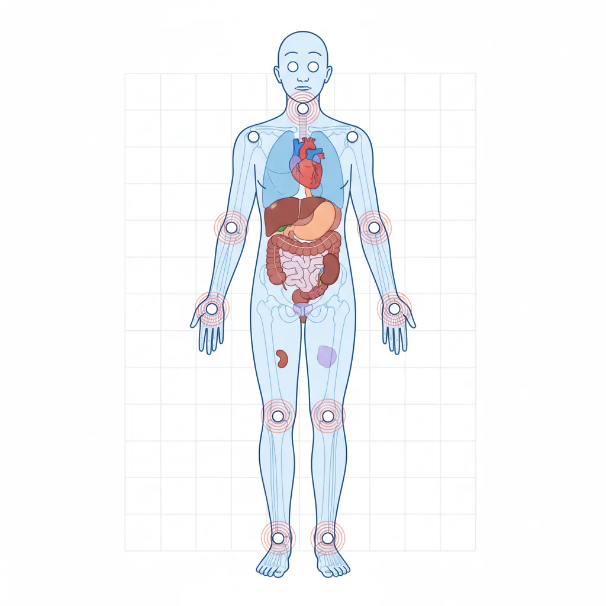
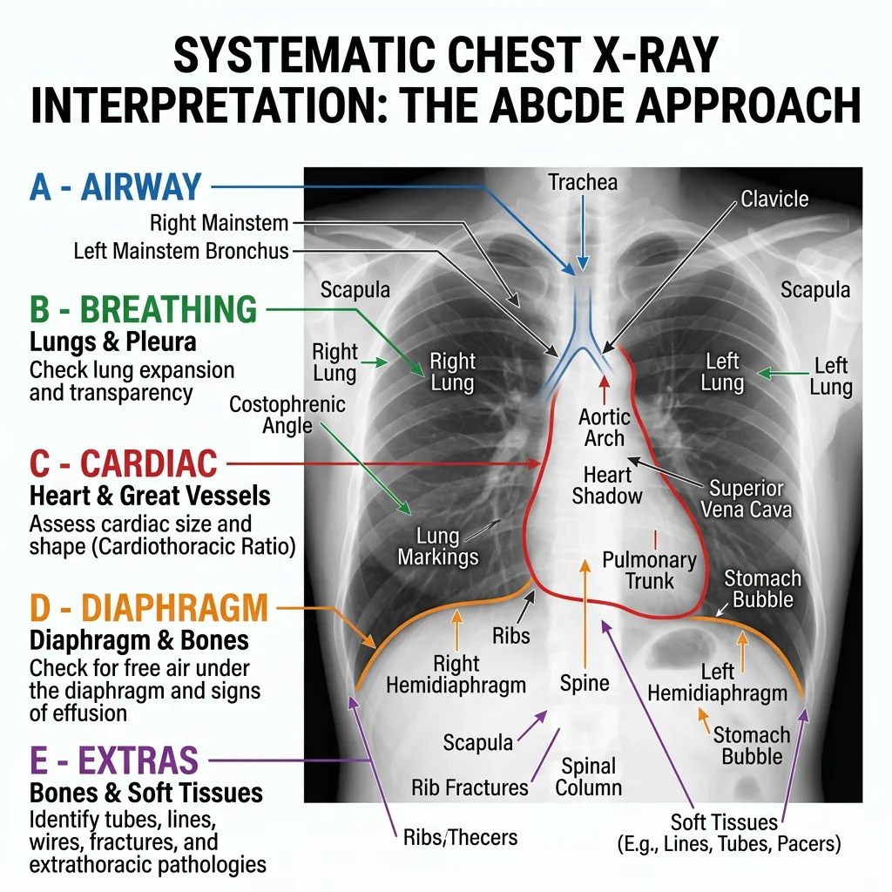
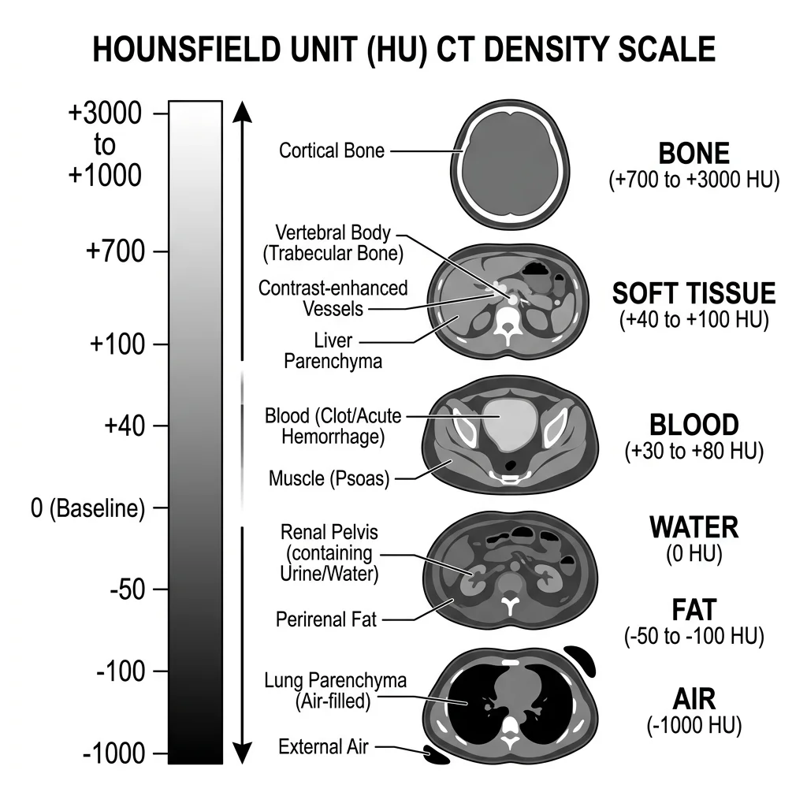
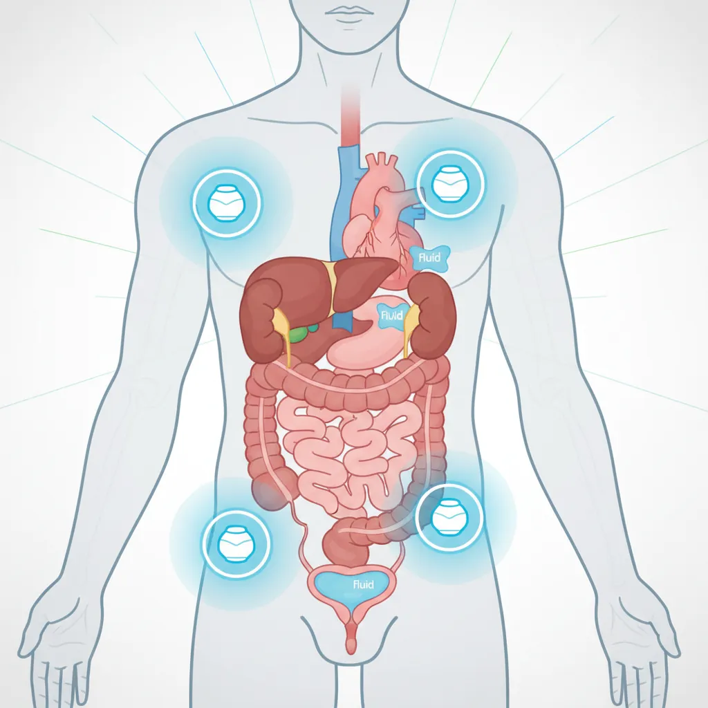
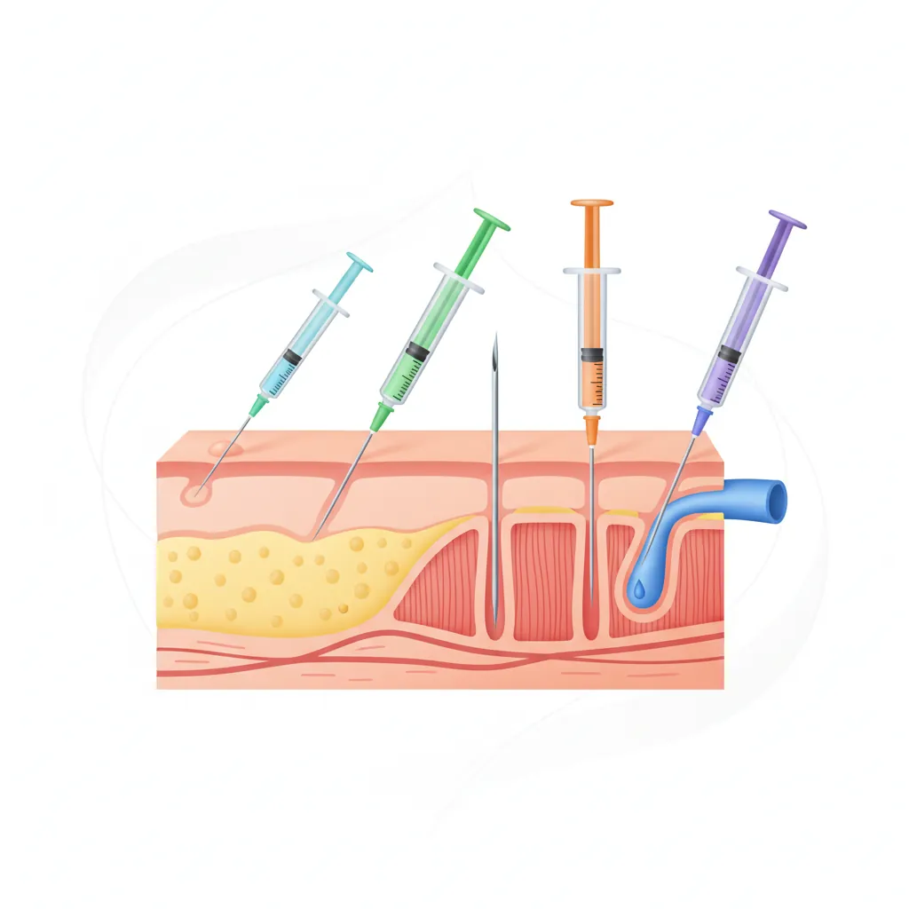
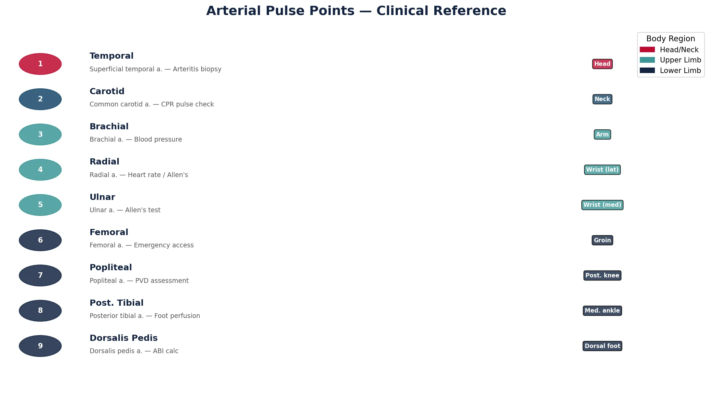

Human Anatomy Mastery
Anatomical Terminology & Body Planes
Directional terms, planes, cavities, tissuesSkeletal System & Joints
Osteology, axial & appendicular, arthrologyMuscular System & Movement
Muscle types, functional groups, biomechanicsCardiovascular & Lymphatic Anatomy
Heart, vessels, lymphatics, clinical linksNervous System & Neuroanatomy
CNS, PNS, autonomic, functional pathwaysVisceral Anatomy — Thorax & Abdomen
Thoracic & abdominal organs, peritoneumHead, Neck & Special Senses
Skull foramina, eye, ear, oral anatomySurface Anatomy & Clinical Imaging
Landmarks, X-ray, CT, MRI, proceduresHistology & Microscopic Anatomy
Cell ultrastructure, tissue & organ histologyEmbryology & Developmental Anatomy
Germ layers, organogenesis, malformationsFunctional & Applied Anatomy
Biomechanics, posture, gait, integrationRegional Dissection Mastery
Upper/lower limb, thorax, abdomen, pelvisSurface Landmarks
Surface anatomy is the art of reading the body's exterior to understand its interior. Before imaging technology existed, clinicians relied entirely on palpation, percussion, and auscultation to assess internal organs. Even today, surface anatomy remains the foundation of the physical examination — every doctor, physiotherapist, and paramedic must locate pulse points, identify bony landmarks, and project organ boundaries onto the body surface.

Palpable Bones & Prominences
Despite being covered by skin, fascia, and muscle, many bony landmarks are readily palpable and serve as reference points for clinical procedures. Understanding these landmarks is essential for physical examination, injection site identification, and surgical planning.
Head & Neck Landmarks
- External occipital protuberance (inion): Palpable midline bump at the back of the skull — landmark for the superior nuchal line
- Mastoid process: Behind the ear — attachment site for the sternocleidomastoid, landmark for mastoiditis
- Hyoid bone: Palpable at C3 level between chin and thyroid cartilage — the only bone without bony articulation
- Thyroid cartilage: "Adam's apple" at C4-C5 — larger in males, landmark for the larynx
- Cricoid cartilage: Complete ring at C6 level — landmark for cricothyroidotomy and Sellick's manoeuvre
- C7 spinous process (vertebra prominens): Most prominent cervical spinous process — palpated with neck flexion
Upper Limb Landmarks
- Acromion: Lateral tip of the shoulder — used to measure arm length and as injection landmark
- Medial and lateral epicondyles: At the elbow — the medial epicondyle overlies the ulnar nerve ("funny bone")
- Olecranon: Tip of the elbow — forms a straight line with the epicondyles in extension, a triangle in flexion
- Radial styloid: At the wrist, lateral side — landmark for radial artery pulse
- Anatomical snuffbox: Triangular depression between extensor pollicis longus and brevis — scaphoid bone deep to it; tenderness here suggests scaphoid fracture
Trunk Landmarks
- Jugular notch: Suprasternal notch at the top of the sternum — landmark for the trachea and subclavian vessels
- Angle of Louis (sternal angle): Junction of manubrium and body of sternum — marks T4/T5 level, 2nd rib attachment, aortic arch, and the tracheal bifurcation
- Xiphoid process: Inferior tip of sternum — landmark for CPR hand placement and subcostal approach to the pericardium
- Iliac crest: Palpable from anterior superior iliac spine (ASIS) to posterior — marks L4 vertebra level (used for lumbar puncture)
- Anterior superior iliac spine (ASIS): Most anterior point of iliac crest — landmark for inguinal ligament, McBurney's point
Leopold Auenbrugger and Percussion (1761)
Austrian physician Leopold Auenbrugger, the son of an innkeeper, developed the technique of percussion — tapping the chest wall and listening to the resulting sound — by applying the same principle his father used to assess fluid levels in wine barrels. He published Inventum Novum in 1761, demonstrating that dull sounds indicated fluid or solid masses beneath the surface, while resonant sounds indicated air-filled lung. This technique, based purely on surface anatomy, remains a core examination skill over 260 years later.
Arterial Pulse Points
Arterial pulses are palpable where arteries run superficially over bone. The nine standard pulse points provide a rapid assessment of cardiovascular status and regional blood flow:
| Pulse Point | Artery | Location | Clinical Use |
|---|---|---|---|
| Temporal | Superficial temporal | Anterior to the ear | Giant cell arteritis biopsy site |
| Carotid | Common carotid | Anterior to SCM at thyroid cartilage level | CPR pulse check, carotid bruit auscultation |
| Brachial | Brachial | Medial bicipital groove, antecubital fossa | Blood pressure measurement (Korotkoff sounds) |
| Radial | Radial | Lateral wrist, over radial styloid | Heart rate, Allen's test for hand perfusion |
| Ulnar | Ulnar | Medial wrist, lateral to pisiform | Allen's test (second component) |
| Femoral | Femoral | Midinguinal point (midway ASIS to pubic symphysis) | Emergency vascular access, cardiac arrest pulse check |
| Popliteal | Popliteal | Posterior knee, deep in popliteal fossa | Peripheral vascular disease assessment |
| Posterior tibial | Posterior tibial | Behind medial malleolus | Foot perfusion, ABI calculation |
| Dorsalis pedis | Dorsalis pedis | Dorsum of foot, lateral to EHL tendon | Foot perfusion assessment |
Organ Projection Zones
Clinicians project internal organ boundaries onto the body surface to guide examination. Key projections include:
- Heart: The cardiac silhouette projects between the 2nd and 5th intercostal spaces. The apex beat is normally palpable in the 5th intercostal space, midclavicular line — displacement suggests cardiomegaly or pleural pathology.
- Lungs: The lung apices extend 2-3 cm above the medial clavicle. The lower border crosses rib 6 at the midclavicular line, rib 8 at the midaxillary line, and rib 10 at the posterior scapular line. The oblique fissure follows the medial border of the scapula.
- Liver: Upper border at the 5th intercostal space in the right midclavicular line (overlaps with lung), lower border at the right costal margin. Normally, the liver edge should not extend >1 cm below the costal margin on palpation.
- Spleen: Long axis along the 10th rib on the left. The spleen must be enlarged 2-3× its normal size before it becomes palpable below the left costal margin.
- Kidneys: The right kidney is lower (depressed by the liver). The 12th rib crosses the upper pole posteriorly — renal angle tenderness is assessed by gentle percussion here (Murphy's kidney punch).
- McBurney's point: One-third of the way from the ASIS to the umbilicus — surface projection of the base of the appendix. Maximal tenderness here in appendicitis.
Radiographic Anatomy
Radiography (X-ray imaging) was the first technology to visualize anatomy in living patients. Discovered by Wilhelm Conrad Röntgen in 1895 — he famously X-rayed his wife Anna Bertha's hand, producing one of the most iconic images in medical history — X-rays remain the most common imaging modality worldwide, with over 3.6 billion examinations performed annually.

X-Ray Interpretation
X-rays work by passing electromagnetic radiation through the body. Dense structures (bone, metal) absorb more radiation and appear white (radiopaque), while air-filled structures absorb less and appear black (radiolucent). Soft tissues appear in shades of grey. Systematic interpretation prevents missed findings.
Chest X-Ray: Systematic Approach (ABCDE)
The chest X-ray is the most frequently ordered radiograph. A systematic approach ensures nothing is missed:
- A — Airway: Trachea midline? Carina visible? Bronchi patent?
- B — Breathing (Lungs): Lung fields clear? Compare both sides. Look for opacities, pneumothorax (absent lung markings), effusion (meniscus sign)
- C — Cardiac: Heart size (cardiothoracic ratio <50%?), heart borders sharp? Aortic knuckle normal?
- D — Diaphragm: Both hemidiaphragms visible? Right higher than left (liver). Costophrenic angles sharp?
- E — Everything else: Bones (rib fractures, lytic lesions), soft tissues (subcutaneous emphysema), review areas (behind the heart, lung apices, below diaphragm)
The "White-Out" Chest X-Ray
A 68-year-old man with a history of heavy smoking presents with progressive breathlessness. His chest X-ray shows complete opacification ("white-out") of the left hemithorax with mediastinal shift to the left. Analysis: A white-out can represent either massive pleural effusion or complete lung collapse (atelectasis). The direction of mediastinal shift is the key: effusion pushes the mediastinum away from the affected side (the fluid occupies space), while collapse pulls the mediastinum toward the affected side (volume loss). In this case, the shift toward the white side indicates a large endobronchial tumour causing left lung collapse.
Normal vs Pathological Findings
Recognising pathology requires first knowing what normal looks like. Common normal variants that can mimic pathology include:
| Normal Variant | May Mimic | How to Differentiate |
|---|---|---|
| Cervical rib | Apical lung lesion | Follows rib contour, bilateral comparison |
| Breast shadow | Lower zone opacity | Bilateral, smooth inferior margin, clinical correlation |
| Companion shadow | Pneumothorax | Runs parallel to clavicle, not at lung apex |
| Pectus excavatum | Right heart border loss | Lateral view shows sternal depression |
| Azygos fissure | Cavity or mass | Comma-shaped opacity in right upper lobe, ~1% of CXRs |
Cross-Sectional Imaging
Cross-sectional imaging — CT and MRI — revolutionized anatomy by providing detailed views of internal structures in any plane. Understanding these modalities requires knowledge of how different tissues appear and why, enabling clinicians to identify normal anatomy and detect pathology.

CT Anatomy & Windows
Computed Tomography (CT) uses rotating X-ray beams and computer reconstruction to create cross-sectional images. Each pixel is assigned a Hounsfield Unit (HU) value representing tissue density:
| Tissue | HU Range | Appearance |
|---|---|---|
| Air | −1000 | Black |
| Fat | −120 to −80 | Dark grey |
| Water / CSF | 0 | Dark grey |
| Soft tissue / Muscle | +40 to +80 | Grey |
| Acute blood | +50 to +70 | Bright grey/white |
| Bone | +400 to +1000 | White |
| Metal | >+1000 | Bright white (with artefact) |
Window settings adjust the range of HU values displayed, optimizing visualization for specific tissues:
- Lung window (W: 1500, L: −600): Maximizes air-tissue contrast for lung parenchyma assessment
- Soft tissue window (W: 350, L: +50): Standard for abdominal and mediastinal structures
- Bone window (W: 2000, L: +500): Highlights cortical and trabecular bone detail
- Brain window (W: 80, L: +40): Narrow window for subtle grey-white matter differentiation
MRI Sequences & Tissue Contrast
Magnetic Resonance Imaging (MRI) uses strong magnetic fields and radiofrequency pulses to excite hydrogen protons in tissues. Different pulse sequences produce different tissue contrasts without ionizing radiation:
| Tissue | T1-Weighted | T2-Weighted | FLAIR |
|---|---|---|---|
| Fat | Bright (high signal) | Bright | Bright |
| Water / CSF | Dark (low signal) | Bright | Dark (suppressed) |
| White matter | Lighter grey | Darker grey | Grey |
| Grey matter | Darker grey | Lighter grey | Grey |
| Muscle | Intermediate | Intermediate to dark | Intermediate |
| Cortical bone | Dark (no signal) | Dark | Dark |
| Oedema / Pathology | Dark or isointense | Bright | Bright |
The key mnemonics: T1 = anatomy (fat is bright, provides excellent anatomical detail) and T2 = pathology (water and oedema are bright, making pathological fluid collections conspicuous). FLAIR (Fluid-Attenuated Inversion Recovery) suppresses CSF signal, making periventricular lesions (such as multiple sclerosis plaques) stand out against the now-dark ventricles.
Acute Stroke — CT vs MRI
A 72-year-old woman presents with sudden-onset right-sided weakness and expressive aphasia. CT brain (30 minutes post-onset): Normal — early ischaemic stroke is often invisible on CT for the first 6-12 hours. MRI DWI (Diffusion-Weighted Imaging): Shows a bright area in the left middle cerebral artery territory, confirming acute ischaemic stroke within minutes of onset. Anatomical correlation: The affected region includes Broca's area (inferior frontal gyrus) and the motor cortex for the right upper limb — explaining both the aphasia and the weakness. This case demonstrates why MRI with DWI is the gold standard for early stroke diagnosis, while CT's primary role is to exclude haemorrhage before thrombolysis.
Ultrasound Anatomy
Ultrasound uses high-frequency sound waves (typically 2-15 MHz) to create real-time images of internal structures. Unlike CT and MRI, it is portable, radiation-free, and provides dynamic assessment — making it indispensable at the bedside, in emergency departments, and in obstetric care.

FAST Exam
The Focused Assessment with Sonography for Trauma (FAST) is a rapid bedside ultrasound protocol performed in trauma patients to detect free fluid (usually blood) in dependent peritoneal and pericardial spaces. It takes approximately 3-5 minutes and can be performed simultaneously during primary survey.
The standard FAST exam involves four acoustic windows:
- Right upper quadrant (Morison's pouch): Between liver and right kidney — the most dependent peritoneal space in a supine patient. Free fluid appears as an anechoic (black) stripe between these organs.
- Left upper quadrant (Splenorenal recess): Between spleen and left kidney — free fluid collects here, also check above the diaphragm for left-sided haemothorax.
- Suprapubic (Pelvis): Posterior to the bladder (rectovesical pouch in males, pouch of Douglas in females) — the most dependent space when upright.
- Subxiphoid (Pericardium): Pericardial effusion appears as fluid surrounding the heart. Critical for diagnosing cardiac tamponade.
Vascular Access
Ultrasound-guided vascular access has become the standard of care for central venous catheterization, dramatically reducing complications compared to landmark-based techniques.
Internal jugular vein (IJV) cannulation: The IJV lies anterolateral to the internal carotid artery in the carotid triangle of the neck. Under ultrasound, veins are thin-walled and compressible (collapse with probe pressure); arteries are thick-walled and pulsatile. The probe is placed transversely across the SCM to visualise both vessels, and the needle is advanced under real-time guidance into the vein while avoiding the artery.
Key ultrasound distinction: Veins are compressible, non-pulsatile, and increase in size with Valsalva manoeuvre. Arteries are round, pulsatile, and non-compressible. This distinction is critical — inadvertent arterial puncture during central line insertion can cause haematoma, stroke, or air embolism.
Point-of-Care Applications
Point-of-care ultrasound (POCUS) extends beyond trauma to multiple clinical applications:
- Cardiac: Bedside echocardiography for ejection fraction estimation, pericardial effusion, right ventricular dilation (pulmonary embolism)
- Lung: B-lines (vertical reverberation artefacts from thickened interlobular septa) indicate pulmonary oedema; absent lung sliding indicates pneumothorax
- Abdominal: Gallstone detection, hydronephrosis, aortic aneurysm measurement, free fluid
- MSK: Tendon tears, joint effusions, foreign body detection, fracture assessment
- Obstetric: Foetal heartbeat detection, dating, position, placental location
- Procedural: Guided nerve blocks, abscess drainage, thoracentesis, paracentesis
Procedural Anatomy
Every clinical procedure is an exercise in applied anatomy. Knowing exactly what structures lie beneath the skin at an injection site, incision line, or needle insertion point determines the difference between a successful procedure and a complication. This section covers the anatomical basis of common clinical procedures.

Injection Sites & Techniques
Different injection routes target different tissue layers, each with specific anatomical considerations:
| Route | Primary Site | Anatomical Basis | Needle Angle | Common Use |
|---|---|---|---|---|
| Intramuscular (IM) | Deltoid (arm), Vastus lateralis (thigh), Ventrogluteal (hip) | Large muscle mass, good blood supply, away from major nerves | 90° | Vaccines, antibiotics, hormones |
| Subcutaneous (SC) | Abdomen (periumbilical), Upper arm, Thigh | Adipose tissue beneath dermis, slow absorption | 45° | Insulin, heparin, growth hormone |
| Intradermal (ID) | Forearm (volar surface) | Between epidermis and dermis, sparse blood supply | 10-15° | TB test (Mantoux), allergy testing |
| Intravenous (IV) | Antecubital fossa, dorsum of hand | Superficial veins accessible without major nerve proximity | 15-30° | Medications, fluids, blood products |
Surgical Approaches
Surgical incisions are planned along Langer's lines (skin tension lines) to minimize scarring and following anatomical planes that provide access while preserving critical structures:
- Midline laparotomy: Through the linea alba (avascular fusion of abdominal aponeuroses) — provides access to the entire abdominal cavity with minimal bleeding and nerve damage
- McBurney's (Gridiron) incision: Oblique incision at McBurney's point — muscles are split along their fibres rather than cut, preserving innervation and allowing better healing
- Kocher's subcostal incision: Right subcostal for cholecystectomy — follows the costal margin, dividing external and internal oblique muscle layers
- Pfannenstiel incision: Suprapubic transverse incision for Caesarean section — follows Langer's lines for cosmetic result, but requires rectus sheath division and rectus muscle separation
Emergency Landmarks
In emergency situations, rapid anatomical localization can be life-saving:
| Emergency | Landmark | Procedure | Anatomical Basis |
|---|---|---|---|
| Tension pneumothorax | 2nd ICS, midclavicular line | Needle decompression | Minimal chest wall thickness; above the 3rd rib to avoid the neurovascular bundle running below each rib |
| Cardiac tamponade | Left xiphocostal angle, 30-45° toward left shoulder | Pericardiocentesis | Subxiphoid approach avoids pleura and major vessels; pericardium is most accessible here |
| Airway obstruction | Cricothyroid membrane | Cricothyroidotomy | Superficial membrane between thyroid and cricoid cartilages; no major vessels |
| Massive haemothorax | 5th ICS, anterior axillary line ("safe triangle") | Chest drain (intercostal tube) | Triangle bounded by anterior border of latissimus dorsi, lateral border of pectoralis major, and a line superior to the nipple (approximately 5th ICS) |
| Spinal anaesthesia | L3-L4 or L4-L5 (iliac crest level) | Lumbar puncture | Spinal cord ends at L1-L2 in adults; needle enters subarachnoid space below the conus medullaris |
Tension Pneumothorax in Trauma
A 28-year-old motorcyclist is brought to the emergency department after a high-speed collision. He is tachycardic (HR 130), hypotensive (BP 80/50), and has absent breath sounds on the right side with tracheal deviation to the left. Clinical diagnosis: Tension pneumothorax — air entering the pleural space through a one-way valve mechanism, progressively collapsing the lung and pushing the mediastinum to the opposite side, compressing the contralateral lung and great vessels. Immediate treatment: Needle decompression using a large-bore cannula inserted into the 2nd intercostal space in the midclavicular line, above the 3rd rib (to avoid the neurovascular bundle). A rush of air confirms the diagnosis. Definitive management is a chest drain in the 5th intercostal space within the "safe triangle." This procedure requires no imaging — it is performed on clinical and anatomical grounds alone.
Practice & Tools
Applied Code Example
This Python script creates a visual reference chart of the nine standard arterial pulse points, showing their anatomical location and clinical significance:
import matplotlib.pyplot as plt
import matplotlib.patches as mpatches
import numpy as np
# Arterial pulse points: Name, Artery, Body Region, Clinical Use
pulse_points = [
("Temporal", "Superficial temporal", "Head", "Arteritis biopsy"),
("Carotid", "Common carotid", "Neck", "CPR pulse check"),
("Brachial", "Brachial", "Arm", "Blood pressure"),
("Radial", "Radial", "Wrist (lat)", "Heart rate / Allen's"),
("Ulnar", "Ulnar", "Wrist (med)", "Allen's test"),
("Femoral", "Femoral", "Groin", "Emergency access"),
("Popliteal", "Popliteal", "Post. knee", "PVD assessment"),
("Post. Tibial", "Posterior tibial", "Med. ankle", "Foot perfusion"),
("Dorsalis Pedis", "Dorsalis pedis", "Dorsal foot", "ABI calc"),
]
fig, ax = plt.subplots(figsize=(14, 8))
ax.set_xlim(0, 10)
ax.set_ylim(0, 10.5)
ax.axis('off')
ax.set_title("Arterial Pulse Points — Clinical Reference",
fontsize=18, fontweight='bold', pad=20, color='#132440')
regions = {'Head': '#BF092F', 'Neck': '#16476A', 'Arm': '#3B9797',
'Wrist (lat)': '#3B9797', 'Wrist (med)': '#3B9797',
'Groin': '#132440', 'Post. knee': '#132440',
'Med. ankle': '#132440', 'Dorsal foot': '#132440'}
for i, (name, artery, region, use) in enumerate(pulse_points):
y = 9.5 - i * 1.0
color = regions[region]
# Pulse indicator
circle = plt.Circle((0.5, y), 0.3, color=color, alpha=0.85)
ax.add_patch(circle)
ax.text(0.5, y, str(i + 1), ha='center', va='center',
fontsize=10, fontweight='bold', color='white')
# Details
ax.text(1.2, y + 0.15, name, fontsize=12, fontweight='bold', color='#132440')
ax.text(1.2, y - 0.2, f"{artery} a. — {use}",
fontsize=9, color='#555555')
# Region badge
ax.text(8.5, y, region, ha='center', va='center',
fontsize=8, fontweight='bold', color='white',
bbox=dict(boxstyle='round,pad=0.3', facecolor=color, alpha=0.8))
# Legend
unique_colors = {'Head/Neck': '#BF092F', 'Upper Limb': '#3B9797', 'Lower Limb': '#132440'}
legend_items = [mpatches.Patch(color=c, label=t) for t, c in unique_colors.items()]
ax.legend(handles=legend_items, loc='upper right', fontsize=10,
title="Body Region", title_fontsize=11)
plt.tight_layout()
plt.savefig('pulse_points_chart.png', dpi=150, bbox_inches='tight')
plt.show()
print("Chart saved as pulse_points_chart.png")
Surface Landmark Documentation Tool
Use this interactive tool to document surface anatomy observations, imaging findings, and procedural landmarks. Record palpable bones, pulse points, organ projections, and imaging interpretations. Export your worksheet as Word, Excel, or PDF.
Surface Landmark Documentation
Document surface anatomy observations and imaging findings. Download as Word, Excel, or PDF.
Conclusion & Next Steps
Surface anatomy and clinical imaging form the bridge between anatomical knowledge and clinical practice. We explored palpable bony landmarks, arterial pulse points, organ projection zones, systematic X-ray interpretation, CT and MRI tissue contrast principles, ultrasound applications from FAST exams to vascular access, and the anatomical basis of clinical procedures from injections to emergency interventions. Every pulse you palpate, every X-ray you interpret, and every needle you advance is an exercise in applied anatomy.
In the next part, we'll shift our focus to the microscopic world — exploring histology, cell ultrastructure, and the four primary tissue types that compose every organ we've studied so far.